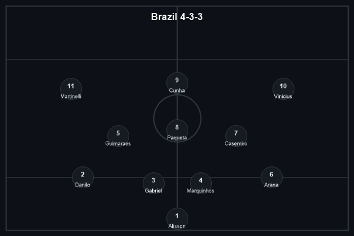
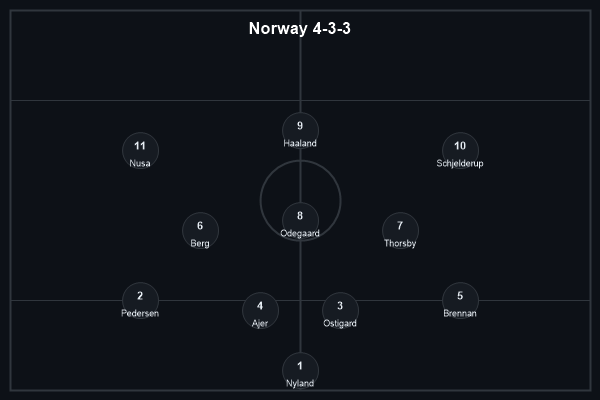
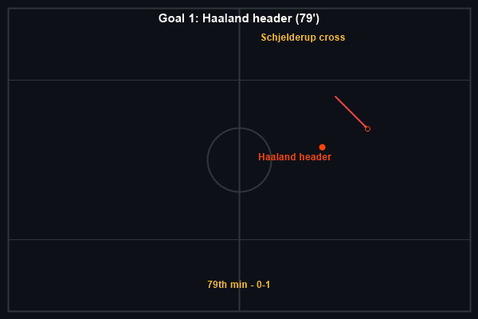
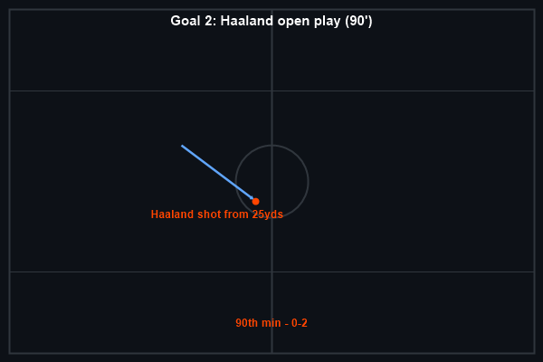
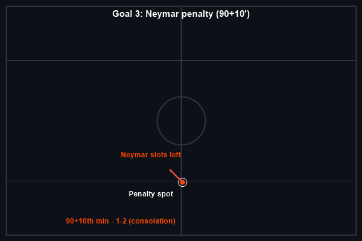
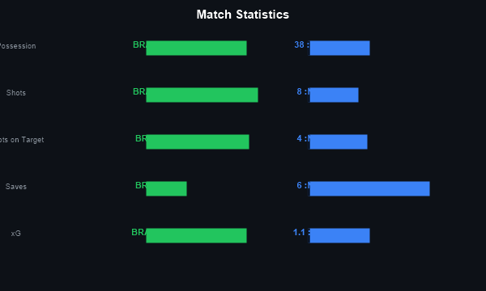

Brazil 1-2 Norway. The scoreline flatters Brazil. For 78 minutes, Orjan Nyland repelled everything the Selecao threw at him — including a Bruno Guimaraes penalty saved in the 14th minute. Then Haaland happened. First a towering header from a Schjelderup cross in the 79th minute, then a stunning low drive from outside the box in the 90th. Neymar's stoppage-time penalty was a consolation, scored 10 minutes into added time with Brazil's fans already heading for the exits.
Norway will face England in the quarterfinals in Miami. Carlo Ancelotti's Brazil head home earlier than they have in 36 years.
Brazil set up in their familiar 4-3-3 with Vinicius Junior and Martinelli wide of Cunha. Ancelotti made the surprising call to leave Neymar on the bench — his tournament had been limited to one substitute appearance — and Casemiro started despite fitness doubts. Norway matched the shape with a 4-3-3 of their own, but the key tactical decision was Solbakken's: drop deep, absorb pressure, and release Haaland and Nusa in transition.
The first half was all Brazil. They generated 1.4 xG before the break, with Nyland saving from Martinelli (twice), Vinicius, and Guimaraes' penalty. Norway had 22% possession in the first half and zero shots on target. But the pattern was unsustainable — Brazil's relentless pressure without reward carried an emotional cost, and Haaland needed only one chance to shift the momentum entirely.

79' — Haaland (header) — 0-1. A seven-pass sequence freed substitute Andreas Schjelderup down the left. His cross was perfect — whipped with pace to the penalty spot — and Haaland rose above his Arsenal teammate Gabriel to power a downward header past Alisson. It was the kind of goal that defines Haaland: the defender knows what is coming and cannot stop it. 62 goals in 54 international matches.

90' — Haaland (open play) — 0-2. If the first goal was raw power, the second was pure technique. Picking up the ball 25 yards from goal, Haaland shifted it onto his left foot and drilled a low shot that deflected marginally off Danilo and nestled inside Alisson's far post. The celebration — a Viking row with his teammates — was the image that defined Norway's greatest night.

90+10' — Neymar (penalty) — 1-2. With virtually the last kick of the game, Neymar converted a penalty that was academic. The emotional image of the 34-year-old in tears after the final whistle — being consoled by teammates — felt like the end of an era. It may have been his final World Cup appearance.

The narrative is one of Brazilian dominance punished by Norwegian efficiency. Brazil generated 1.8 xG to Norway's 1.1, but Nyland made 6 saves to Alisson's 2. Brazil had 18 shots to Norway's 8 — but the two that mattered came from Haaland. The miss of the game belonged to Endrick, the teenage substitute, who was sent through by Vinicius after 59 minutes but took a heavy touch and scuffed wide with the goal at his mercy.
The 35-year-old goalkeeper produced a performance that will be remembered alongside the great World Cup goalkeeping displays. His penalty save from Bruno Guimaraes in the 14th minute was only the beginning — he denied Vinicius at his near post, smothered a Martinelli header, tipped a Rayan curler over the bar, and somehow prevented an Ajer own goal with an acrobatic back-pedalling catch. Six saves, a penalty saved, and a clean sheet that lasted 79 minutes against the most storied attack in World Cup history. He played handball as a youth; it showed in his reflexes.
This is Norway's first-ever World Cup quarterfinal. For Haaland, it's seven goals in four games — level with Messi and Mbappe in the Golden Boot race. He has now scored in 14 consecutive competitive internationals (27 goals). For Brazil, the post-mortem will be brutal. They had made at least the quarterfinals in every World Cup since 1990. Neymar, 34, and Casemiro, 34, likely played their last World Cup matches. Ancelotti's future as manager will be questioned. Norway will face England in Miami on 11 July — a nation that has never been this far awaits its golden generation's defining test.